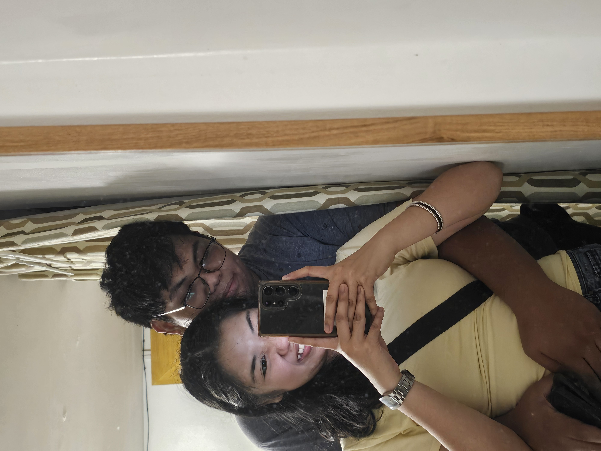
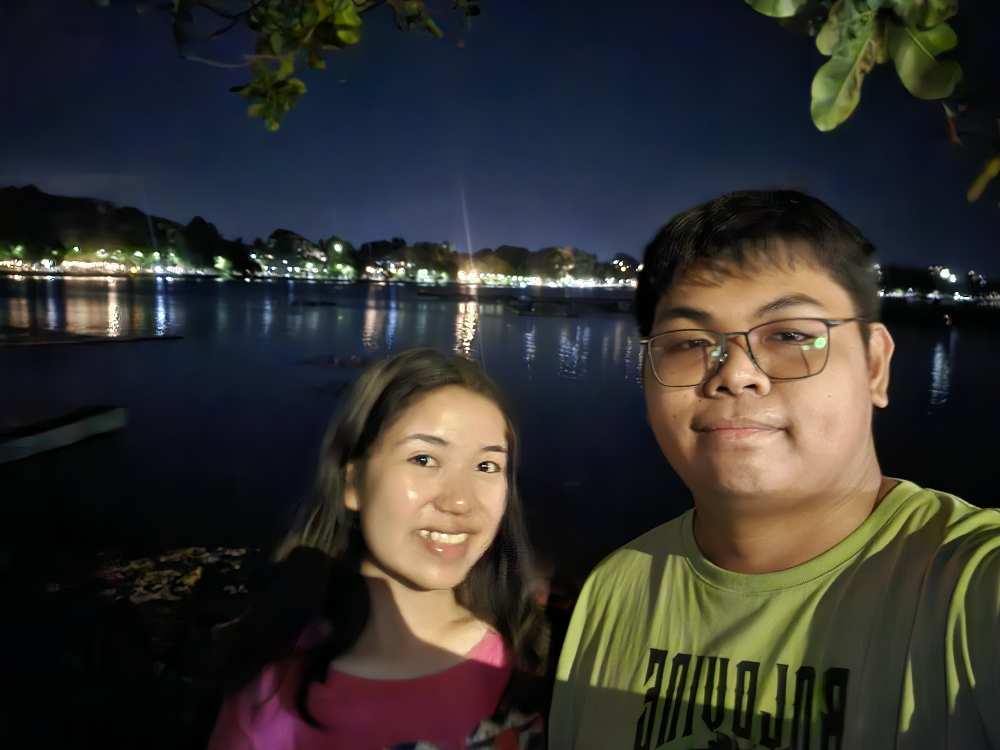
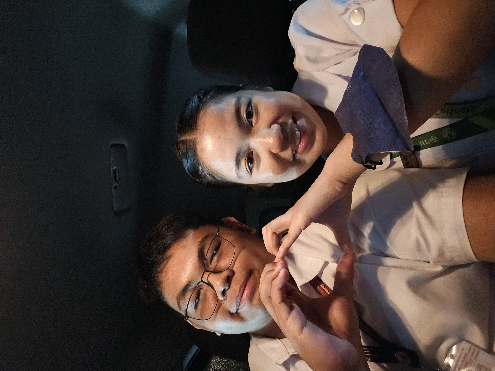
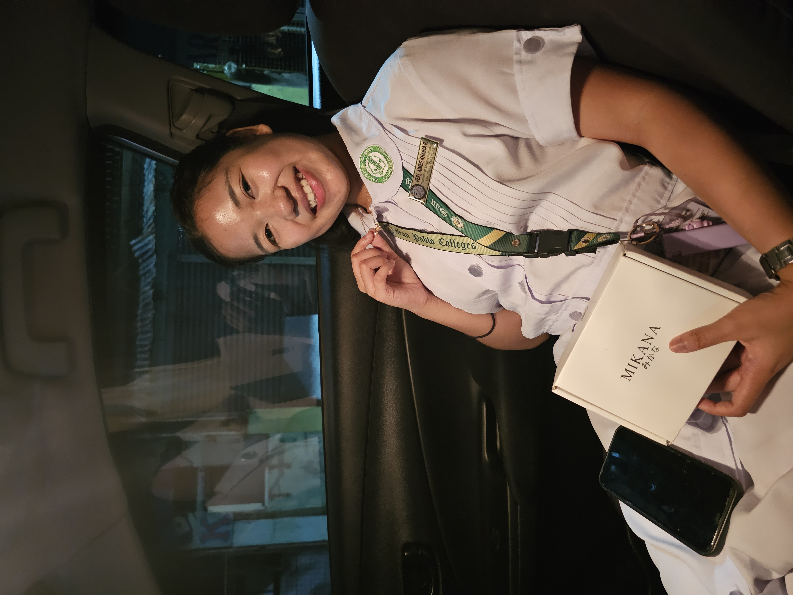
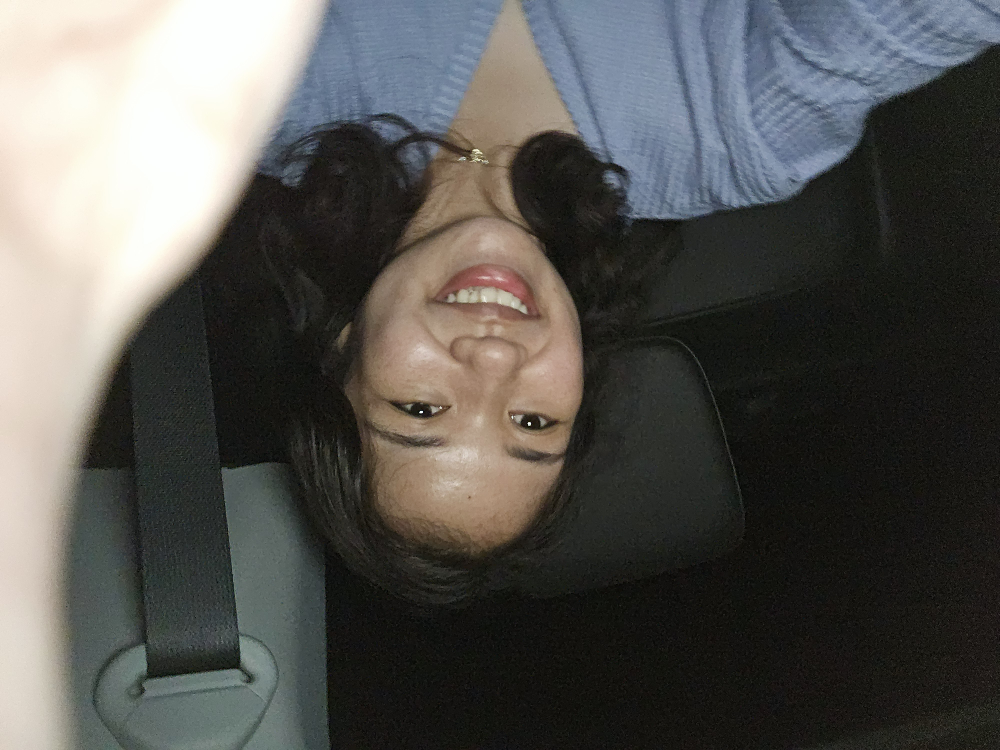
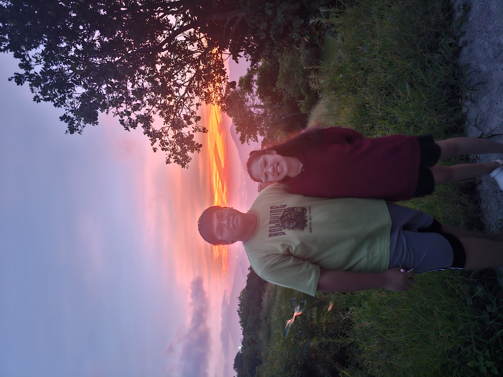
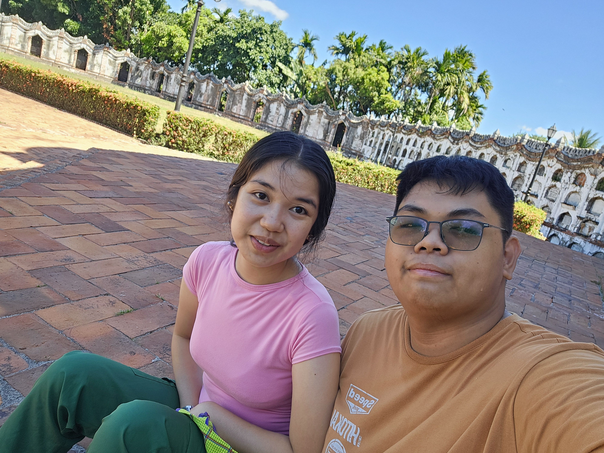
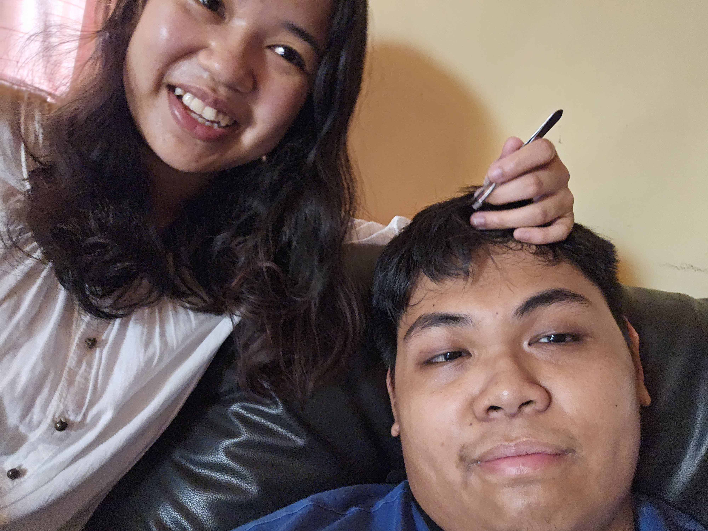
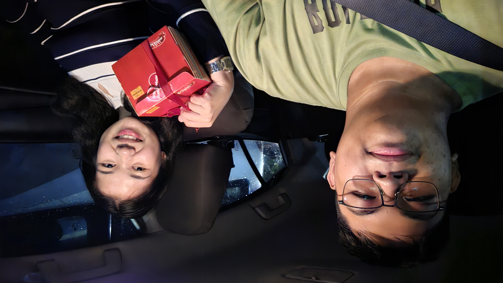

Roblox
From volleyball pasarap to horors and dress to impress.
A little surprise for you
A little corner of the internet made just for you — filled with memories, tiny surprises, and a few words from my heart.
Counting down to your day
There's something hidden here...
Some things are more fun when you have to discover them.
If I could give you one thing today, it would be the ability to see yourself through my eyes — so you'd know just how incredibly special you are to me.
Our little gallery
Our Memories together I know marami pa yan pero these are all the one i remeber veri-well haha










Our kind of fun
Roblox, Call of Duty Mobile, Minecraft — somehow every game is better with you.
From volleyball pasarap to horors and dress to impress.
Lagi ka nakaka clutch, and you always do good (sorry sapaw me).”
Sabi ko one call away lang me if you need my help hehe.
Selos nako kay Phoenix ha jk, ok lang if ma blind mo me hehe. And magaling ka po sapaw lang talaga me sorry.
Our Story
Hello noong una tayo nag meet super hiya ko rin noon (poker face lang) I was like, legit ba to? may tao palang mag kaka gusto sakin. I cant believe talaga. And I am so very happy i meet you.
For me Everyday being with you is the best Memory
Today is another chapter, and I'm grateful that I get to be here with you for it.
More games. More laughs. More pictures. More adventures. More us.
A letter for you
Happy birthday, my love. 💜
First of all im so grateful kay God that he made me meet you. Like sabi ko another year nanaman na walang patutunguhan like wala talaga akong expectations for 2026, but then i meet you. You made me look forward and ipagpatuloy ang year na to as positive (medyo negative na kasi ako these past few years sa totoo lang). So im so so thankfull to have you in my Life. Kay lovella rin pala kahit medyo late ka na niya pinakilala sakin hehe.
Sa totoo lang di ko expected na may tao sa mundo na mag kakaroon ng interest sakin. Tanda ko pa non tunay ba to or panaginip, pero sabi ko bahala na. Tapos nako mag paka mangmang and went for it. And now we are here 9months and counting. I know maraming ups and downs but di naman maiiwasan yon since mga bata pa tayo but the fact the we are still together after everything that happened is proof that we are meant to be (oo na feelingero na minsan lang naman)
Saka pala salamat rin at pinaglaban mo tayo sa parents mo kahit tutol sila na mag ka relationship ka. I know na mahirap yun since babae ka, and i admire that from you. But sometimes do tell me if may nagagawa ako or may nasasabi na medyo na o-off ka. Since communication is key and ayaw ko na nag aaway tayo since mahirap and oo di ako marunong manuyo sorry na. I still try though.
All the affirmations and assurances na sinabi ko sayo ay totoo. Saka aminin ko i have low self esteem/confidence kaya minsan parang nahihiya ako gawin ang ibang bagay, nauunahan ako ng ok lang ba kaya sayo yon?. But i'll overcome it for us.
Sorry for all the bad things i did. I know that i made you cry and thats on me. I am genuinely sorry for all the things i have said, act, and done. And thank you for still being with me after us almost parting ways. Sa totoo lang di ko talaga kinaya nung sinabi mo na ayaw mo na at pagod kana sakin. Tumigil talaga ang mundo ko. My bad rin sa part na araw na yon di ko talaga alam kung bat ngyari yon sorry po talga I promise and vow na that will never ever happen ever again. And i will make my self better and worthy for you. Saka nung nag punta ko sayo to fix my mistake and to learn kung ano nagawa ko. Di na ko naka imek nung time na yon kasi na iyak ka and sobrang galit ako non sa sarili ko dahil sa nagawa ko, di ko na talaga alam kung anong gagawin ko that time. But im still thankfull that you still gave me a chance to made up. Im so very thankfull po.
And sorry din kung di ko sinasabi mga nararamdamn ko sayo and dinadaan ko sa pag paparineg mb on that part. To be honest nung tinanong mo ako about na ano masasabi ko na mag cacanada kana. Ang sinabi ko ok lang at susunod ako, pero truth be told i dont know where to begin parang coping ko nalang yung sabi ko yon. Syempre mahirap sakin na mas lumayo kapa but its for your future naman kaya i support you 100%. I want whats best for my beautiful special girl.
You always make me happy, everytime na mag chachat ka i look forward to it. Dati lagi naka dnd phone ko but ngayon lagi ng online waiting for you. I am always eager to see you, kahit na mahal ang gas mas mahal kita and i want to be always with you kahit saglit lang. Walang araw na di kita gustong makita. Youre always on my mind. And i will serve you hangat kaya ko pa.
For our future naman "Time will tell" parin but let us grow together and go through the hardships and happines na haharapin natin. One day magiging official rin tayo and mag chuchurch tayo palagi magkasama and do kung ano gusto natin.
Yun lang naman, I wish you a very Blessed and happiest birthday, 21 kana po wows. I will be always praying over you to be successfull, maging healthy, magka peace of mind, wisdom, strength, and more Better things to come in life. All i want for you is to be happy and fullfilled, thats all that matters to me, seeing you happy make me happy aswell.
Lastly, I cant see myself in the future na wala ka. I have the found the one for me and no one comes close to you. You still choose me even if i messed up alot of times and forgave me. Im once again thankfull for you. I want you to know kung gaano ka ka importante sa buhay ko. Alot of people knows that aswell on how important you are to my life.
One last little surprise
Click the heart.